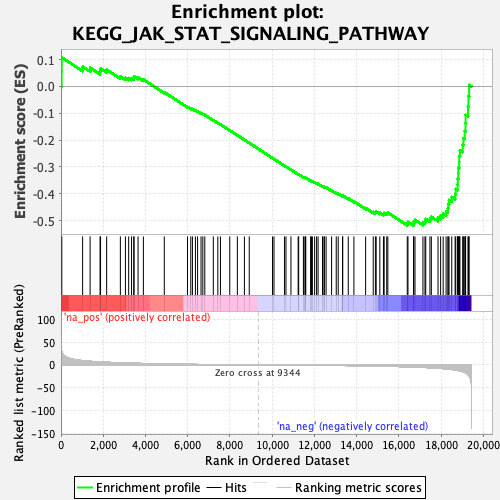
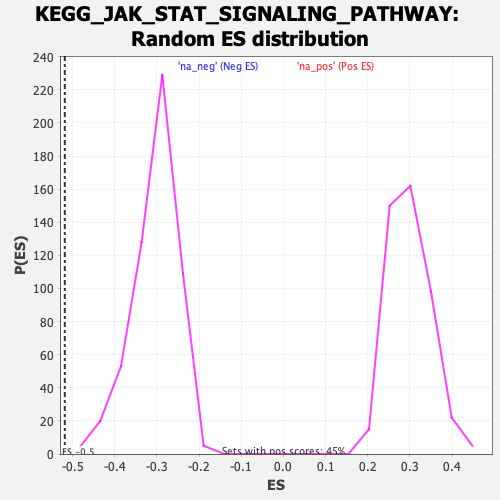

| | | Dataset | DE_genes |
| Phenotype | NoPhenotypeAvailable |
| Upregulated in class | na_neg |
| GeneSet | KEGG_JAK_STAT_SIGNALING_PATHWAY |
| Enrichment Score (ES) | -0.5184353 |
| Normalized Enrichment Score (NES) | -1.7013242 |
| Nominal p-value | 0.0 |
| FDR q-value | 0.05122713 |
| FWER p-Value | 0.262 |
Table: GSEA Results Summary

Fig 1: Enrichment plot: KEGG_JAK_STAT_SIGNALING_PATHWAY
Profile of the Running ES Score & Positions of GeneSet Members on the Rank Ordered List
| SYMBOL | RANK IN GENE LIST | RANK METRIC SCORE | RUNNING ES | CORE ENRICHMENT | | 1 | PRLR | 28 | 31.446 | 0.0547 | No |
| 2 | CCND2 | 34 | 30.097 | 0.1082 | No |
| 3 | STAT1 | 1024 | 9.397 | 0.0739 | No |
| 4 | MYC | 1378 | 7.849 | 0.0696 | No |
| 5 | SOCS2 | 1849 | 6.442 | 0.0568 | No |
| 6 | IFNGR1 | 1873 | 6.382 | 0.0670 | No |
| 7 | PIK3R1 | 2162 | 5.736 | 0.0624 | No |
| 8 | PIAS4 | 2811 | 4.520 | 0.0369 | No |
| 9 | CISH | 3051 | 4.140 | 0.0320 | No |
| 10 | IL2RG | 3205 | 3.905 | 0.0310 | No |
| 11 | SOCS4 | 3340 | 3.716 | 0.0308 | No |
| 12 | CCND3 | 3445 | 3.582 | 0.0318 | No |
| 13 | PTPN11 | 3460 | 3.563 | 0.0374 | No |
| 14 | AKT1 | 3649 | 3.349 | 0.0337 | No |
| 15 | STAM2 | 3901 | 3.043 | 0.0261 | No |
| 16 | SOCS1 | 4891 | 2.022 | -0.0214 | No |
| 17 | IL11RA | 5990 | 1.243 | -0.0760 | No |
| 18 | STAT3 | 6146 | 1.148 | -0.0819 | No |
| 19 | PIK3R3 | 6224 | 1.103 | -0.0840 | No |
| 20 | IL12RB2 | 6365 | 1.010 | -0.0894 | No |
| 21 | MPL | 6468 | 0.956 | -0.0930 | No |
| 22 | IL11 | 6631 | 0.867 | -0.0998 | No |
| 23 | GHR | 6716 | 0.824 | -0.1027 | No |
| 24 | TYK2 | 6810 | 0.779 | -0.1061 | No |
| 25 | SOCS7 | 7213 | 0.596 | -0.1258 | No |
| 26 | AKT3 | 7426 | 0.517 | -0.1358 | No |
| 27 | CNTFR | 7550 | 0.467 | -0.1414 | No |
| 28 | GRB2 | 7992 | 0.315 | -0.1636 | No |
| 29 | IL23A | 8351 | 0.214 | -0.1817 | No |
| 30 | PIAS2 | 8685 | 0.136 | -0.1987 | No |
| 31 | LIFR | 8914 | 0.084 | -0.2104 | No |
| 32 | CCND1 | 10017 | -0.129 | -0.2671 | No |
| 33 | IL12A | 10085 | -0.147 | -0.2703 | No |
| 34 | CNTF | 10582 | -0.269 | -0.2955 | No |
| 35 | STAT6 | 10653 | -0.287 | -0.2986 | No |
| 36 | CSF2RB | 10889 | -0.351 | -0.3101 | No |
| 37 | IL21R | 11229 | -0.451 | -0.3269 | No |
| 38 | IL7 | 11255 | -0.458 | -0.3273 | No |
| 39 | SOCS5 | 11479 | -0.529 | -0.3379 | No |
| 40 | PIM1 | 11513 | -0.539 | -0.3387 | No |
| 41 | STAT4 | 11577 | -0.561 | -0.3409 | No |
| 42 | OSM | 11591 | -0.567 | -0.3406 | No |
| 43 | CSF3R | 11819 | -0.638 | -0.3512 | No |
| 44 | AKT2 | 11863 | -0.654 | -0.3522 | No |
| 45 | IL2RB | 11904 | -0.662 | -0.3531 | No |
| 46 | PIK3CG | 12011 | -0.698 | -0.3574 | No |
| 47 | IL9R | 12104 | -0.731 | -0.3608 | No |
| 48 | IFNLR1 | 12174 | -0.752 | -0.3630 | No |
| 49 | SPRY4 | 12383 | -0.843 | -0.3723 | No |
| 50 | PIK3R5 | 12453 | -0.880 | -0.3743 | No |
| 51 | IL7R | 12471 | -0.885 | -0.3736 | No |
| 52 | PIK3R2 | 12553 | -0.914 | -0.3761 | No |
| 53 | CSF2RA | 12814 | -1.022 | -0.3878 | No |
| 54 | BCL2L1 | 13034 | -1.113 | -0.3971 | No |
| 55 | JAK1 | 13127 | -1.157 | -0.3998 | No |
| 56 | IFNAR1 | 13336 | -1.262 | -0.4083 | No |
| 57 | PTPN6 | 13338 | -1.264 | -0.4061 | No |
| 58 | EP300 | 13603 | -1.414 | -0.4172 | No |
| 59 | IL10RA | 13871 | -1.581 | -0.4282 | No |
| 60 | STAT5B | 14425 | -1.980 | -0.4533 | No |
| 61 | JAK2 | 14785 | -2.262 | -0.4678 | No |
| 62 | IL12RB1 | 14888 | -2.351 | -0.4689 | No |
| 63 | IL6ST | 14925 | -2.386 | -0.4665 | No |
| 64 | LIF | 15097 | -2.523 | -0.4708 | No |
| 65 | STAT5A | 15269 | -2.700 | -0.4748 | No |
| 66 | CBL | 15302 | -2.735 | -0.4716 | No |
| 67 | PIK3CD | 15425 | -2.861 | -0.4728 | No |
| 68 | IFNE | 15477 | -2.903 | -0.4702 | No |
| 69 | STAM | 16397 | -4.075 | -0.5105 | Yes |
| 70 | PIAS3 | 16431 | -4.121 | -0.5048 | Yes |
| 71 | PIK3CA | 16695 | -4.544 | -0.5103 | Yes |
| 72 | IL15 | 16703 | -4.557 | -0.5025 | Yes |
| 73 | CLCF1 | 16763 | -4.645 | -0.4973 | Yes |
| 74 | IL6R | 17140 | -5.346 | -0.5072 | Yes |
| 75 | CBLC | 17236 | -5.553 | -0.5022 | Yes |
| 76 | EPOR | 17272 | -5.665 | -0.4939 | Yes |
| 77 | LEPR | 17471 | -6.097 | -0.4932 | Yes |
| 78 | IL22RA1 | 17537 | -6.265 | -0.4854 | Yes |
| 79 | SPRY3 | 17854 | -7.142 | -0.4890 | Yes |
| 80 | PIK3CB | 17977 | -7.583 | -0.4817 | Yes |
| 81 | SPRY2 | 18098 | -8.074 | -0.4735 | Yes |
| 82 | SOS2 | 18236 | -8.615 | -0.4652 | Yes |
| 83 | IL10RB | 18322 | -9.073 | -0.4534 | Yes |
| 84 | CTF1 | 18337 | -9.128 | -0.4378 | Yes |
| 85 | JAK3 | 18376 | -9.305 | -0.4232 | Yes |
| 86 | IFNAR2 | 18504 | -9.925 | -0.4120 | Yes |
| 87 | PIAS1 | 18663 | -10.930 | -0.4007 | Yes |
| 88 | SOCS3 | 18694 | -11.128 | -0.3823 | Yes |
| 89 | STAT2 | 18782 | -11.890 | -0.3656 | Yes |
| 90 | CBLB | 18788 | -11.912 | -0.3446 | Yes |
| 91 | IFNGR2 | 18812 | -12.173 | -0.3240 | Yes |
| 92 | OSMR | 18815 | -12.197 | -0.3023 | Yes |
| 93 | IL13RA1 | 18857 | -12.689 | -0.2818 | Yes |
| 94 | SOS1 | 18859 | -12.696 | -0.2592 | Yes |
| 95 | IL4R | 18892 | -13.021 | -0.2376 | Yes |
| 96 | IRF9 | 19021 | -14.663 | -0.2180 | Yes |
| 97 | IL20RB | 19056 | -15.132 | -0.1927 | Yes |
| 98 | SPRY1 | 19117 | -16.427 | -0.1665 | Yes |
| 99 | SPRED2 | 19155 | -17.421 | -0.1373 | Yes |
| 100 | IL15RA | 19160 | -17.518 | -0.1062 | Yes |
| 101 | SPRED1 | 19273 | -21.011 | -0.0745 | Yes |
| 102 | CREBBP | 19295 | -22.124 | -0.0360 | Yes |
| 103 | IL20RA | 19329 | -24.277 | 0.0056 | Yes |
Table: GSEA details [plain text format]

Fig 2: KEGG_JAK_STAT_SIGNALING_PATHWAY: Random ES distribution
Gene set null distribution of ES for KEGG_JAK_STAT_SIGNALING_PATHWAY